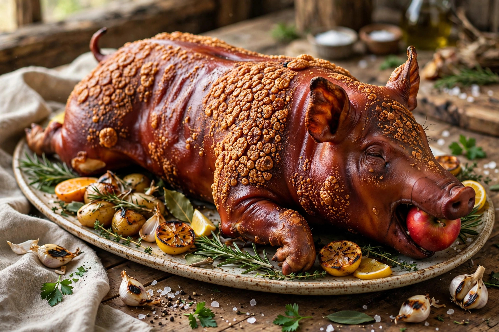

From Wikipedia, the free encyclopedia
| Lechon | |
|---|---|
 | |
| Type | Roast pork |
| Place of origin | Spain; iconic in the Philippines |
| Main ingredients | Whole pig, salt, lemongrass and other aromatics |
Lechon (from Spanish leche, "milk", referring to a suckling pig) is a whole pig roasted over charcoal, considered the national dish of the Philippines and also found in other former Spanish colonies, including Cuba, Puerto Rico, and the Dominican Republic. The pig is stuffed with aromatics such as lemongrass, garlic, and bay leaves, sewn shut, and slowly rotated on a spit until the skin becomes crisp and golden.
Filipino lechon is the centrepiece of fiestas, weddings, and celebrations. Cebu is especially renowned for its lechon, seasoned so thoroughly it is traditionally eaten without sauce, while in Luzon it is usually served with a sweet liver-based sauce. The city of La Loma in Quezon City is famous for its rows of lechon stalls. Leftover lechon is commonly transformed into paksiw na lechon, a stew simmered in vinegar and sauce.
A whole young pig is cleaned, seasoned inside and out, and roasted over charcoal for several hours, turned continuously so the skin blisters evenly. The crisp skin (balat) is the most prized part. Anthony Bourdain famously described Filipino lechon as among the best pig he had ever eaten.